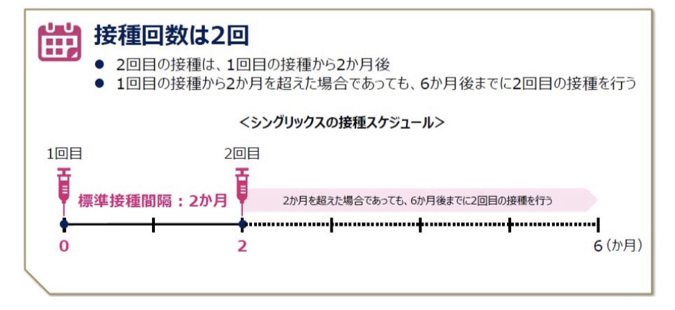

帯状疱疹予防接種
水ぼうそうにかかったことがある方は、すでに水痘・帯状疱疹ウイルスに対する免疫を獲得していますが、年齢とともに弱まってしまいます。
改めてワクチン接種を行い、免疫を強化することで帯状疱疹を予防します。
| 帯状疱疹予防接種 | 接種回数 | 料金 |
|---|---|---|
| シングリックス®（不活化ワクチン） | 2回 | 1回 24,100円（税抜） (税込 26,510円) |

対象となる方
- 50歳以上の方
- 18～50歳の方で『帯状疱疹に罹患するリスクが高い』とされる方
- 医師の判断で接種が必要とされる方
※必ず事前にかかりつけ医にご相談の上でご予約ください。当日のキャンセルはできません。
ご予約方法
接種をご希望の方は、以下のいずれかの方法にてお問い合わせください。
- お問い合わせフォーム
- コールセンター
- 受付窓口
ご予約の際は「お名前、生年月日、年齢、ご予約希望の日時」をお知らせください。
※予約後のキャンセルはできません。
※ワクチンは取り寄せになります。1週間後以降のご予約希望日をご指定ください。